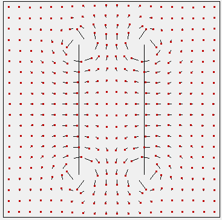
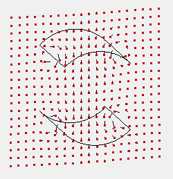

Purpose
This is an example of inserting a Helmholtz coil magnetic field into a workbench. The magnetic field is calculated via Biot-Savart as two wire hoops. The field is loaded into the workbench via a small user program.
Background
A Helmholtz coil consists of an identical pair of circular wire coils that face each other and have a current applied to generate a magnetic field. A Helmholtz coil can generate a fairly uniform magnetic field between the coils provided the distance between coils equals the radius of the coils. For further background see Helmholtz coil.
Files in this demo:
- README.html - Description of example
- helmholtz.iob - SIMION workbench
- helmholtz.lua - SIMION workbench user program used to apply helmholtz magnetic field into helmholtz.iob workbench.
- helmholtz.fly2 - SIMION particle definitions to fly through coil
- helmholtz_many.fly2 - Like helmholtz.fly2 but does many more particles
- mag.pa - Blank magnetic PA. Used to contain magnetic field. Used in helmholtz.iob.
- saddle_coil/ - SIMION saddle coil example [8.2 EA]
Usage
How to run the example:
- 1. View helmholtz.iob. (Click View on main screen and select the helmholtz.iob file.)
- 2. In the Log window, notice the comparison between the SIMION measured field at the origin (B_actual) and the theoretical field (B_theo). These are nearly identical as expected.
- 3. Fly ions. (Click Fly'm.) A series of particles are flown over the volume between the coils with initial velocity parallel to the radii. The radius of each particle trajectory corresponds with the strength of the magnetic field perpendicular to the screen. Notice that the magnetic field strength is fairly uniform over the volume between the circular coils. Observe both the XY and 3D Iso views. In SIMION versions >= 8.1.0, the coil wires will be drawn at the start of the Fly'm.
See the helmholtz.lua source code for more details. Additional details are in the related "solenoid" example (below), which this example is based on.
Three-Axis Helmholtz Coils
"three-axis helmholtz coils" (i.e. three pairs of coils on the X, Y, and Z axes, for a total of six coils), can also easily be defined by uncommenting the code for this in the Lua file.
See Also
- Example: mfield_adjust - demonstrates basic usage of the mfield_adjust segment.
- Example: Solenoid - Very similar example with air coil solenoid magnetic field.
Anti-Helmholtz Configuration

Reversing the current on one coil (by editing helmholtz.lua) produces a spherical quadrupole field, as shown above. See also Helmholtz coil for background (e.g. usage in MOT's).
Saddle Coil
A saddle coil example is added in SIMION 8.2 early access:

Time-Varying Magnetic FIeld
A time-varying magnetic field can be done using something like this:
adjustable freq = 10 -- Hz
function segment.mfield_adjust()
ion_bfieldx_gu, ion_bfieldy_gu, ion_bfieldz_gu =
field(ion_px_mm, ion_py_mm, ion_pz_mm)
local f = sin(ion_time_of_flight * 1E-6 * 2 * math.pi * freq)
ion_bfieldx_gu = f * ion_bfieldx_gu
ion_bfieldy_gu = f * ion_bfieldy_gu
ion_bfieldz_gu = f * ion_bfieldz_gu
end
-- note: ion_time_of_flight units are microseconds.
(since the B-field is proportional to current).
Note, however, that SIMION doesn't simulate the effect of a time varying magnetic field inducing an electric field.
See Doc(time_dependent_field).
Changes/History
- 2013-05-20 - Add "saddle_coil" example (8.2 early access)
- 2012-02-15 - add notes on anti-Helmholtz
- 2011-08-26 - added three-axis Helmholtz coil option; draw coil wires (SIMION 8.1); use contourlib81.lua to draw magnetic field vectors (SIMION 8.1); rename helmholtz.fly2 to helmholtz_many.fly2 and reduce number of particles in new helmholtz.fly2.
- 2010-04 - D.Manura, based on solenoid example.